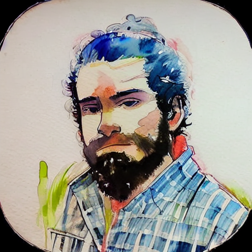
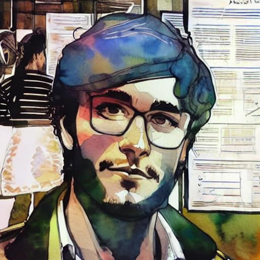
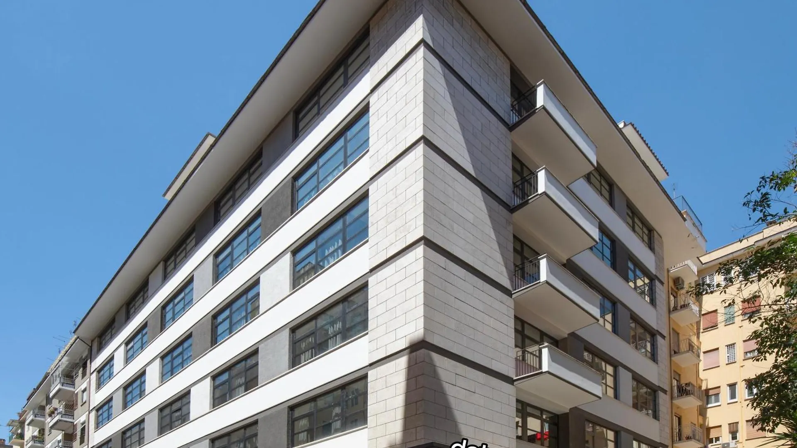
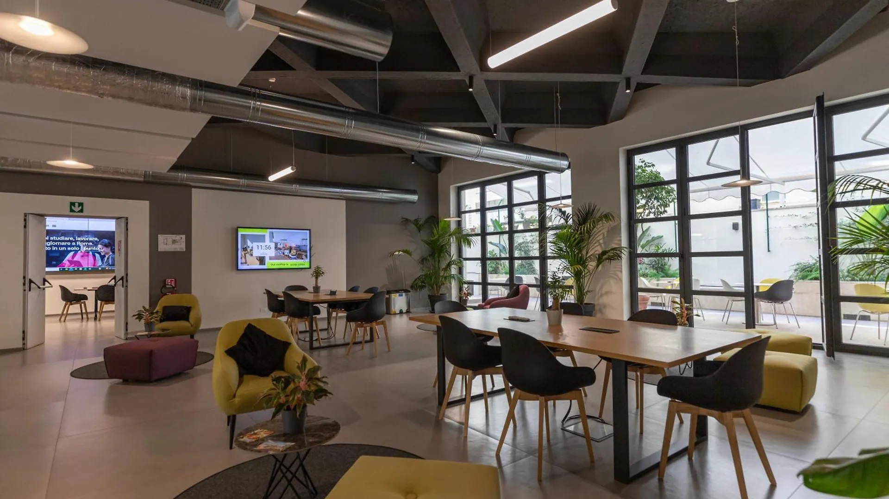
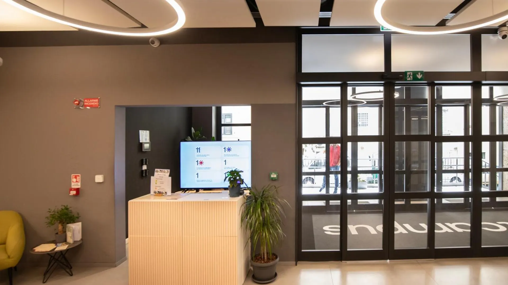
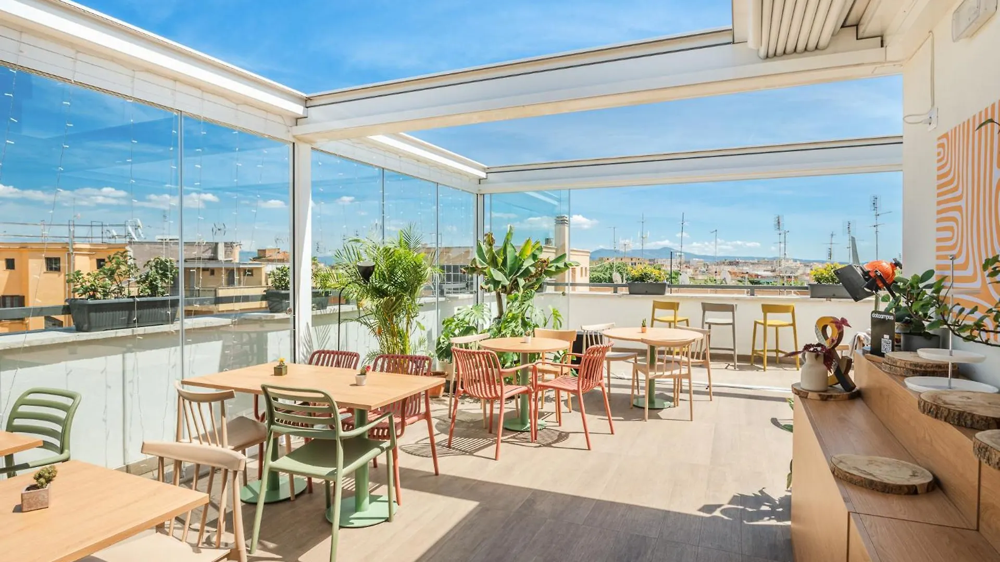

AstroStat School
7th Edition · Rome · 27–31 July 2026
Fear. No. Statistics.
P(Fear|School)=0


AstroStat School
7th Edition · Rome · 27–31 July 2026
P(Fear|School)=0

Since 2019, we have been helping practitioners navigate the perilous waters of statistics and Machine Learning.
Are you an astronomer seeking to advance your research by delving deeper into statistics beyond the basics? Do you possess some familiarity with Machine Learning but are looking to demystify the intricacies of this "black box"?
The Summer School for Astrostatistics suits the needs of those who intend to "bridge the gap", and elevate their level from novice to mid-advanced. Each topic includes an introductory part along with hands-on analysis of astronomical data.
Your essential toolkit for modern data analysis.
Foundational frameworks for hypothesis testing, parameter estimation, and inference.
Autonomous systems that plan, reason, and act — and how to harness them responsibly for scientific workflows.
Neural network architectures for image classification, regression, and pattern recognition in astronomical data.
Non-parametric regression for modeling uncertainty in time-series, light curves, and spectral data.
Sampling techniques for exploring complex posterior distributions in multi-parameter models.
Likelihood-free methods that leverage simulations to perform inference on intractable models.
Clustering, Classification and Regression. Plus, best practices for feature engineering, model validation, cross-validation, and reproducible pipelines.
An introduction to the analysis of time-ordered astronomical data, covering periodicity, variability, and common techniques for light curves and event sequences.
Accelerating computations with GPU programming for large-scale data analysis and simulations.
The detailed programme will be published closer to the school date.
Researchers and practitioners at the intersection of astrophysics, statistics, and machine learning.




At the Astrostat Academy, we are always looking for new voices, fresh ideas, and passionate people to join us. We believe the School should be an open platform — a place where anyone with knowledge and enthusiasm can help shape the next generation of researchers.
Did you participate in previous editions of the School, and would like to start the path of teaching by getting your hands dirty?
Get in touchDo you like the format of the School? You have some topics you want to propose for the next edition, that align with or expand our curriculum?
Get in touchFor the first time, the school moves to Rome — hosted at DotCampus in the heart of San Giovanni district.
A modern campus ecosystem for learning, working, and living. DotCampus offers conference rooms, coworking spaces, and all the infrastructure needed for an intensive hands-on school.
DotCampus offers on-site student rooms at competitive rates, so you can fully immerse in the school experience. The San Giovanni area also has many options via booking platforms.
Short walk from San Giovanni metro (Line A). Easy connections to Termini station and Rome airports.
Most direct
Option A — fastest
Option B — cheaper




As per Astrostat Academy's policy, all lectures will be made freely and publicly available on our GitHub for everyone.
From a small workshop in Crete to an internationally recognized school.
The AstroStat School was founded in 2019 by Jeff Andrews, Paolo Bonfini, Konstantinos Kovlakas, and Grigoris Maravelias at the University of Crete. What began as a grassroots initiative to bridge the gap between astronomy and modern statistical methods has grown into a sought-after international program.
Later, the Astrostat Academy was founded to manage the School and other teaching initiatives.
Over six editions, the School has trained researchers from countries and institutes all over the world, building a growing community of data-literate astrophysicists.
The 2026 Rome edition marks the School's first move to Italy, opening a new chapter under the DotCampus ecosystem.
The organizations that make this school possible.